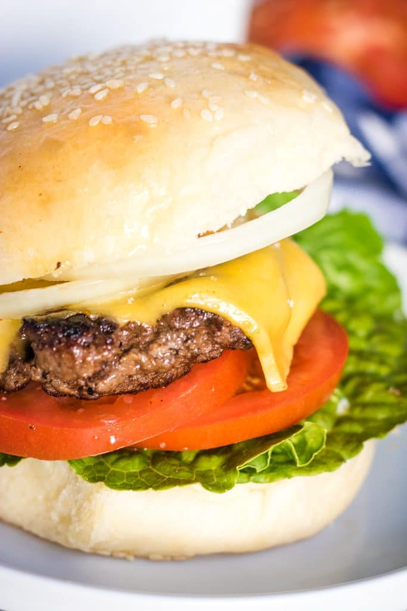

Spaghetti and Meatballs

Description
This recipe is used to make a delicious burger that
incorporates only five recipes! This simple recipe is used
to make an American fast food classic.
ingredients
- Ground Beef
- Pepper
- Dijon Mustard
- Salt
- Worcestershire Sauce
Steps:
- Gather all of your ingredients.
- Mix the pepper, salt, dijon,
and Worcestershire into the meat, gently.
- Form 8 patties (I have a shallow prep bowl
I use to get them all the same size and use
a scale to keep it even!)
- Heat a grill or a large skillet to high.
Cook the patties a few minutes each side until done.
- Remove, and add to a toasted bun with lots of lettuce,
tomatoes, cheese, onions, and pickles (blargh!!) if you must.
- Add ketchup, mustard, and mayo as required.
- Devour.